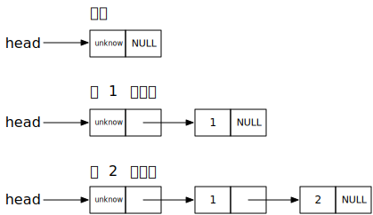
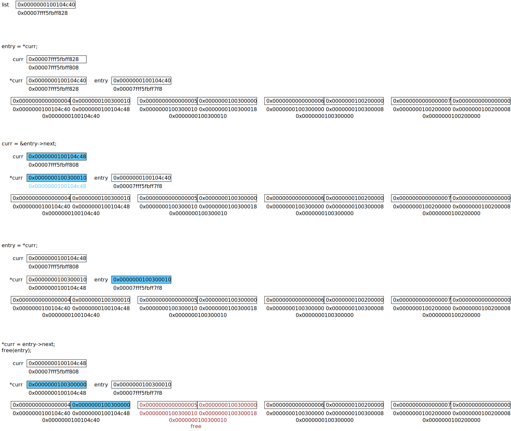
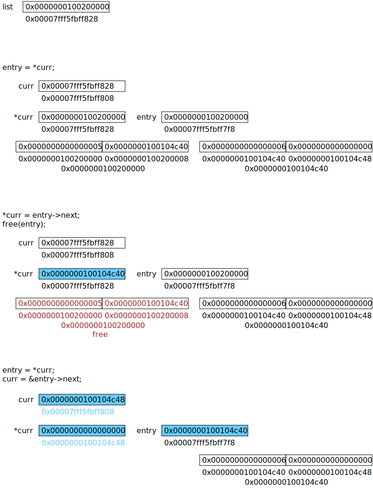

链表是一种数据结构，包含了一些相联系的节点。 这些节点有数据项和链接项组成，数据项存放数据，链接项指向一个节点。 从而使数据能够有序存储，不必受限于物理空间的有序性与大小限制
链表是一种很基本的数据结构，可以被用来组成一些通用的抽象数据结构， 例如，栈，队列，表等
如果使用 C 语言的话，有一些含有链表的库可以使用， 例如 queue.h, list.h, glib, sglib, 别忘了还有你自己的实现
include/linux/list.h/usr/include/sys/queue.hpath/hack.h那么多选哪个使用呢？
我觉得如果编写内核级代码，可以使用前两个
如果编写一般的应用程序，使用后面的那些。抽象程度高的，可移植性的，线程安全的等
参考：https://developer.gnome.org/glib/2.42/
要实现的链表结构如下：

第一次实现的时候，使用的方式是不固定头节点的链表。 虽然是省了一个节点的空间，但是在使用上多有不变，当需要改变头结点的时候， 传的参数必须是头结点的地址，增加了出错的机率
源代码使用头文件 <mtypes.h> 的原因是为了保持实现和使用的一致性（都用到了结构定义）
一般情况下当我们遍历链表删除节点的时候，至少需要两个指针 prev 和 next,
并且当 prev 是否为头节点要做不同的处理
以下代码利用二级指针方便了很多操作
假设链表有中有 4 个数据，分别是 4, 5, 6, 7. 要把其中的 5 删除
entry = *curr; 第一次执行这条语句后，链表及一些变量的值和地址如图所示curr = &entry->next; 因为不满足删除条件，所以执行这条语句entry = *curr; 一次循环完成，再次执行完这条语句entry 的值*curr = entry->next; 满足删除条件，所以执行这条语句*curr 的值被改变，相应地链表中第一个节点中的 next 值被改变
假设链表中有 2 个数据，分别是 5, 6. 要把其中的 5 删除
